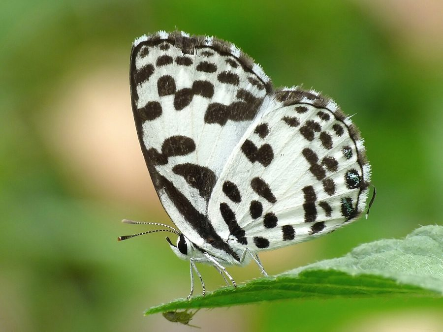

कॉमन पियरो तितलीCommon Pierrot
Castalius rosimon · Lycaenidae · INS-0075

- Scientific name वैज्ञानिक नाम
- Castalius rosimon (Fabricius, 1775)
- Family कुल
- Lycaenidae
- Hindi हिंदी
- कॉमन पियरो तितली
- Local names स्थानीय नाम
- common pierrot, pierrot titli, ber ki titli, chhoti safed titli
- Status here यहाँ की स्थिति
- native
- Movement आवागमन
- Resident, here all year
- IUCN IUCN
- not evaluated
- Review समीक्षा
- audited and independently read
When to look कब देखें
Present all year. साल भर मौजूद।
साधारण पियरट / Common Pierrot
Castalius rosimon (Fabricius, 1775) — Lycaenidae
साधारण पियरट — पूर्वी उत्तर प्रदेश की ber (बेर) की बागों में पाई जाने वाली एक छोटी और सुंदर नीली-गुलाबी तितली है। यह Lycaenidae परिवार की सदस्य है, जिसे "नीली तितलियों" (blue butterflies) के रूप में जाना जाता है। नर की ऊपरी तरफ़ के पंख चमकीले नीले होते हैं, जबकि मादा ऊपर से भूरे-नीले होती है। इसके निचली तरफ़ के पंख पीले-भूरे होते हैं जिन पर छोटे-छोटे काले दाग़े होते हैं। यह तितली बेर के पौधे की पत्तियों खाती है और गाँवों के आसपास बहुत आम है।
Quick Identification त्वरित पहचान
| Feature | Description |
|---|---|
| Size | Small butterfly; body length 12–15 mm; wingspan 24–30 mm |
| Male (Dorsal) | Bright metallic blue upper wings with narrow black borders |
| Female (Dorsal) | Duller grey-brown to dull blue upper wings with extensive dark areas |
| Underparts | Pale yellowish-grey with numerous small black spots arranged in lines |
| Tail | Short tail-like extensions on the hindwing |
| Flight | Weak, fluttering flight; stays low among host plants |
Field tip: Look for tiny bright blue butterflies (males) or duller brown females flying slowly around ber (jujube) bushes. The small size, metallic blue coloration (in males), and strong association with ber plants identify the Common Pierrot.
Morphology आकारिकी
Biometrics (typical measurements for adults in northern Indian plains):
| Measurement | Range |
|---|---|
| Body length | 12–15 mm |
| Wingspan | 24–30 mm |
| Forewing length | 11–14 mm |
Body: Very small, slender, dark brown or black.
Wings:
- Dorsal (upper) surface: Males have bright metallic blue wings with a narrow black margin. Females are duller, with grey-brown or dull blue coloring and more extensive dark markings.
- Ventral (lower) surface: Pale yellowish-grey or cream, marked with numerous small black spots arranged in lines or bands.
Special features: The hindwing has short, tail-like extensions (caudal lobes), a characteristic of many lycaenid butterflies. The underside spotting pattern is highly distinctive.
Sexual Dimorphism: Males are brightly colored with metallic blue upper wings; females are much duller and larger.
Behaviour & Ecology व्यवहार और पारिस्थितिकी
Tiny, weak flyer associated with ber. The Common Pierrot is one of the smallest butterflies in the region. It is a weak, slow flyer that stays low among ber (jujube) bushes, where its food plant is located. Males perch on low twigs and leaves and rapidly dart up to investigate passing insects or females. They are strongly attracted to damp earth and mineral-rich mud. The species is highly specialized on ber, and females lay eggs only on this plant.
Specialized host-plant feeder. The extreme specialization on ber (jujube, Indian Jujube) makes this butterfly an excellent indicator of ber plant presence.
Life Cycle / Phenology जीवन चक्र
| Stage / Season | Event |
|---|---|
| Egg | Laid singly on ber flower buds or tender leaves; pale yellow; hatch in 3–4 days |
| Larval (Caterpillar) | 4 instars; mature caterpillar 8–10 mm long; pale green or yellowish with dark head; development 10–14 days |
| Pupa | Attached chrysalis; pale green or brown; emerges in 6–9 days |
| Adult | Emerges March to October; peak abundance May to September; lifespan 2–3 weeks |
Host Plants or Prey आहार
Larval host plant:
- Ber / Jujube (Indian Jujube / Ziziphus mauritiana and Ziziphus nummularia). This butterfly is highly specialized on this single plant genus.
Adult nectar sources:
- Small flowers on ber plants themselves, and tiny wildflowers near ber bushes.
Predators / Natural Enemies शत्रु
- Birds: Small insectivorous birds and dragonflies prey on them, though the small size offers some protection.
- Spiders: Tiny jumping spiders and web-spinning spiders.
- Parasitoid Wasps: Minute chalcid wasps parasitize caterpillars and pupae.
Agricultural / Human Relevance कृषि प्रासंगिकता
Ber associate. The presence of Common Pierrot butterflies indicates the presence of thriving ber plants and reflects the health of jujube orchards.
Pollinator of ber flowers. Although small, they visit ber flowers and contribute to pollination and fruit set.
Expected Locally स्थानीय रूप से अपेक्षित
Not a field record. Written from published accounts for eastern Uttar Pradesh. No confirmed local sighting yet — if you have seen it, that is what the atlas needs.
अभी तक स्थानीय पुष्टि नहीं। यह विवरण प्रकाशित स्रोतों से है, किसी अवलोकन से नहीं।
To be expected in Basti district throughout the year wherever ber (jujube) plants are grown, particularly in village wastelands and roadside areas with ber bushes. Look for tiny bright blue butterflies (males) flying slowly around ber foliage. Check ber plants for minute pale green caterpillars. The first local record would be a photograph with place and date; send it to the atlas contact on the About page.
Distribution वितरण
Global range: Widespread across South Asia, from the Arabian Peninsula through the Indian subcontinent to Southeast Asia.
In India: Distributed throughout the drier regions of the peninsula and the northern plains.
In Uttar Pradesh: Common resident in all districts where ber is cultivated or grows wild.
In Basti district / eastern UP: Expected wherever ber plants are present.
Research Questions शोध प्रश्न
Anyone can investigate these | कोई भी इन प्रश्नों की जाँच कर सकता है
- Does the Common Pierrot show any preference for young or mature ber leaves for egg-laying? — Observe egg-laying behavior on ber bushes.
- How many eggs can a female Common Pierrot lay on a single ber bush? — Mark and observe captive females.
- What is the ratio of males to females visiting a patch of ber flowers in May? / मई में बेर के फूलों पर आने वाली नर और मादा पियरट का अनुपात क्या है? — Conduct timed observations.
- Do ber bushes with different branch structures support different numbers of Common Pierrot caterpillars? — Survey caterpillar abundance on varied ber architecture.
- How long is the adult lifespan of Common Pierrot in Basti conditions? — Mark and track individuals in field cages.
Similar Species मिलती-जुलती प्रजातियाँ
| Species | How to tell apart | हिंदी |
|---|---|---|
| Large Pierrot (Castalius maculosa) | Slightly larger; more extensive black spotting on underside; different host plant preference | बड़ी पियरट — बड़ा, ज़्यादा दाग़े |
| Hedgeblue (Acesines ravenna) | Slightly larger; different spotting pattern on underside; different coloration | hedge नीली — बड़ा, अलग दाग़े |
Field rule: Tiny bright blue butterfly (male) or duller brown female with pale spotted underside, always associated with ber (jujube) bushes, is the Common Pierrot.
Taxonomy & Classification वर्गीकरण
Original description. Fabricius described the Common Pierrot as Lycaena rosimon in 1775 in Systema Antliatorum, p. 135. The type locality is India. The genus Castalius was later established for these small ber-feeding lycaenids.
Subspecies. The nominate subspecies C. r. rosimon occurs throughout the Indian subcontinent.
Family and order placement. Order Lepidoptera, family Lycaenidae (gossamer-winged butterflies), subfamily Polyommatinae.
Phylogenetic notes. Castalius is a monotypic genus (single species) of South Asian lycaenids, closely related to other small-butterfly genera in the Polyommatinae.
IUCN status rationale. Not evaluated. Common where ber is present, under no conservation threat.
Photo Gallery फोटो गैलरी
No photos yet — add field photos to media/species/common_pierrot/ and run node scripts/sync_photos.js.
Photos needed आवश्यक फोटो
- [ ] Adult male on ber leaf (नर पत्ते पर)
- [ ] Adult female (मादा)
- [ ] Caterpillar on ber (इल्ली)
References संदर्भ
- Fabricius, J.C. (1775). Systema Antliatorum. Flensburgi et Lipsiae, p. 135. [original description]
- Bingham, C.T. (1907). The Fauna of British India, including Ceylon and Burma. Butterflies. Vol. 2. Taylor & Francis, London.
- Kehimkar, I. (2008). The Book of Indian Butterflies. Bombay Natural History Society, Mumbai.
- Kunte, K. (2000). Butterflies of Peninsular India. Universities Press, Hyderabad.
- Zoological Survey of India (2010). Fauna of Eastern Uttar Pradesh.
- GBIF Occurrence Data — Castalius rosimon, Uttar Pradesh (2010–2025).
Source file: species/fauna/insects/common_pierrot.md